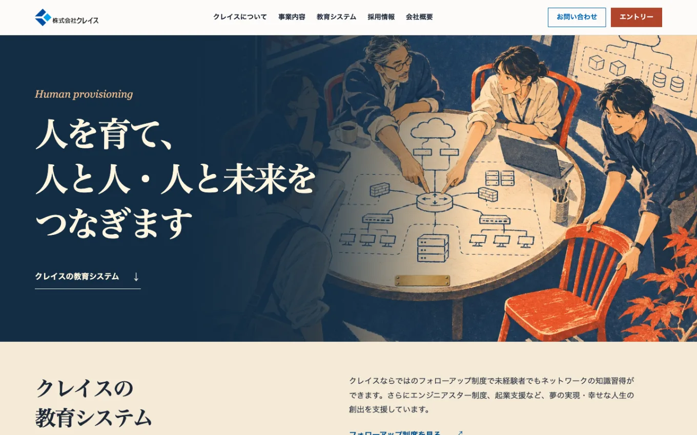
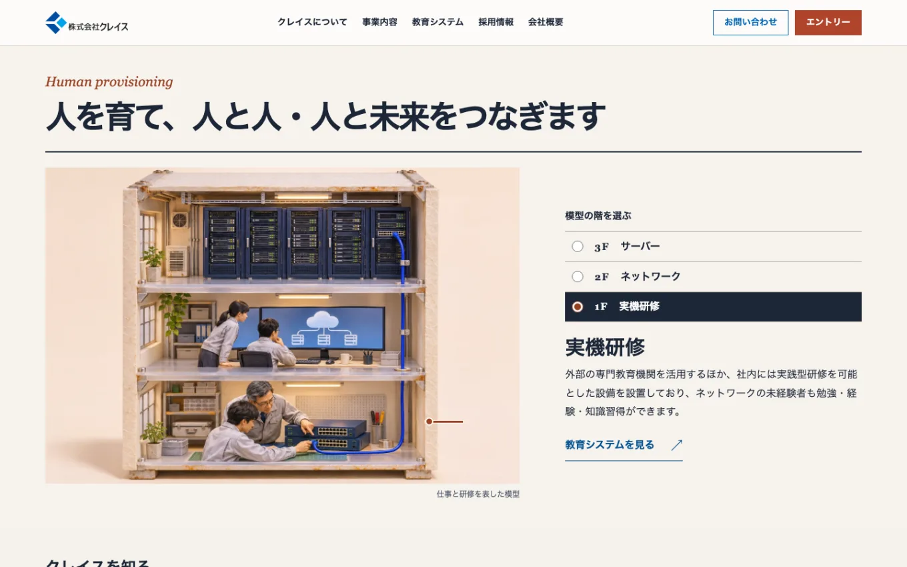
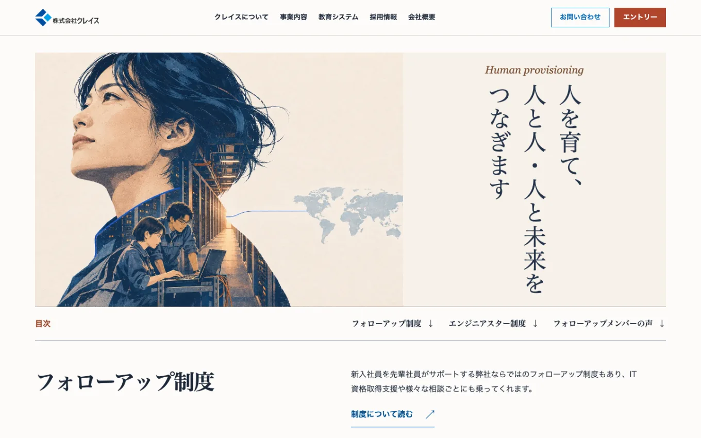

A案 円卓に帰る
円卓を囲む人たちを横長に見せる扉。大きな文字とポスターを追いながら、会社の話に進みます。

実寸で見るデザイン検討稿 第2版
3つの扉を見比べて、次の案に残したいところを選んでください。
円卓を囲む人たちを横長に見せる扉。大きな文字とポスターを追いながら、会社の話に進みます。

実寸で見る実機研修、ネットワーク、サーバーの三層を描いた模型。気になる層を選んで仕事を知る案です。

実寸で見る一人の横顔から始まる雑誌のようなページ。章の索引から、制度や社員の声を読みに行けます。

実寸で見る各案の最初の画面です。画像を押すと拡大できます。
現時点での希望を選んでください。回答した項目だけをコピーできます。
入力した回答は、このブラウザに保存されます。